長期トレンド
JKMとJEPXシステムプライスの推移グラフ
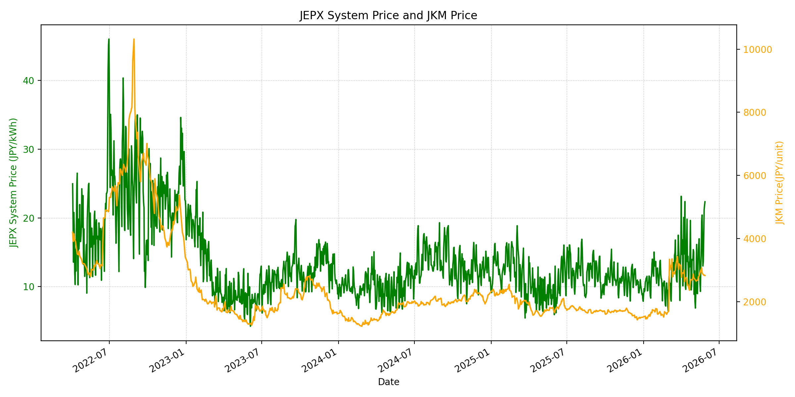
WTIの推移グラフ
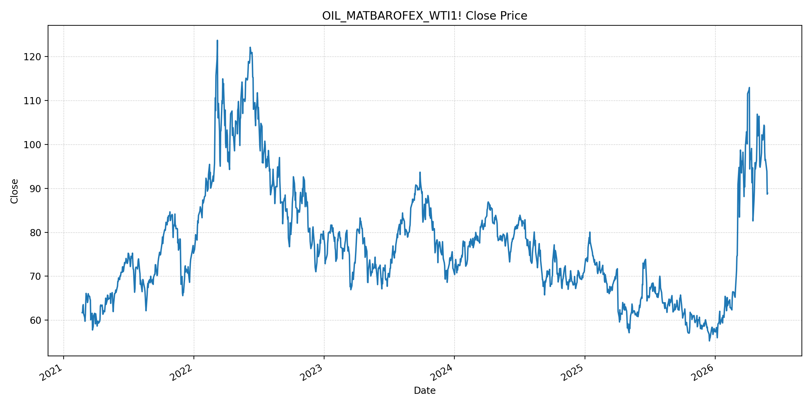
JEPXエリアプライスグラフ（直近一年分）
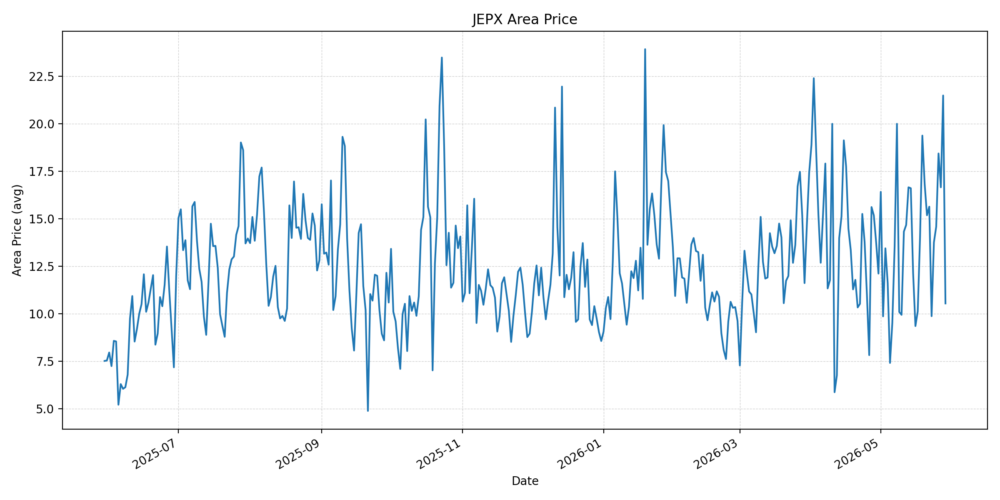
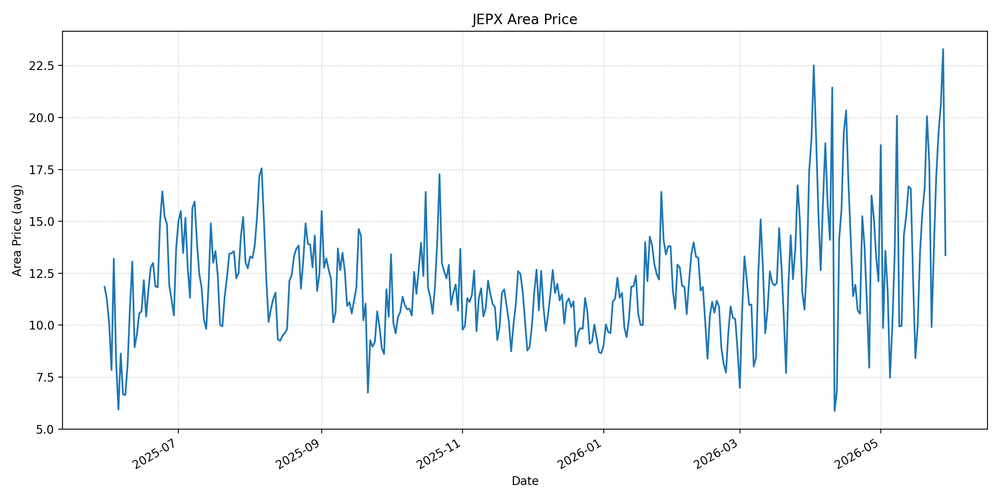
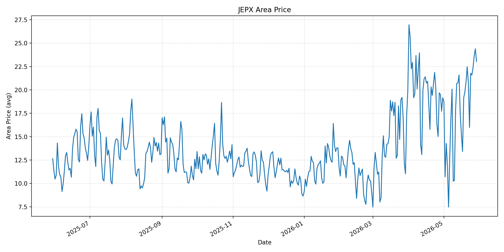
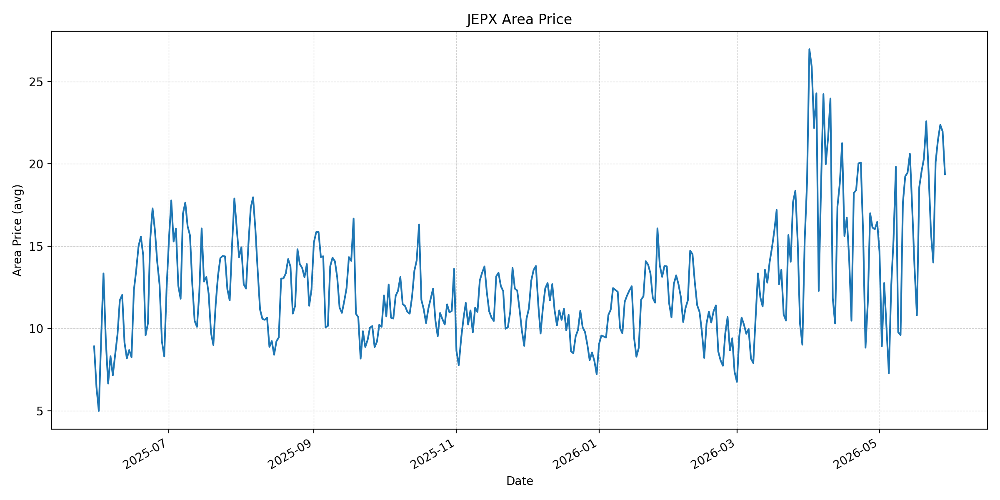
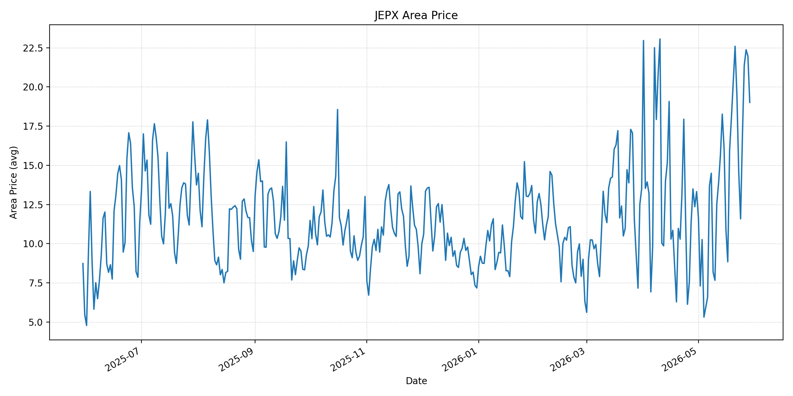
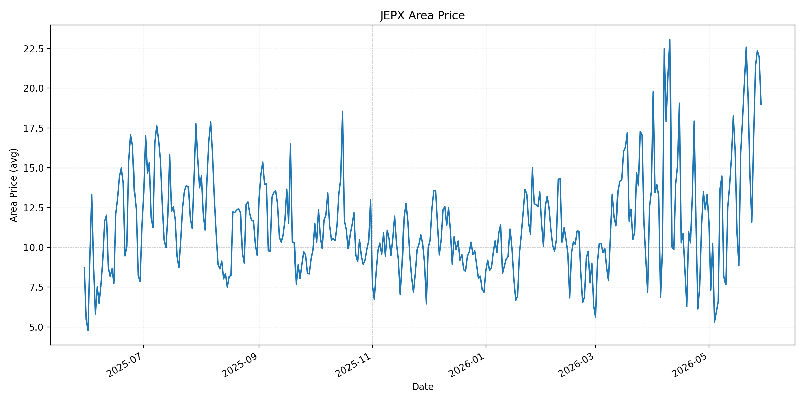
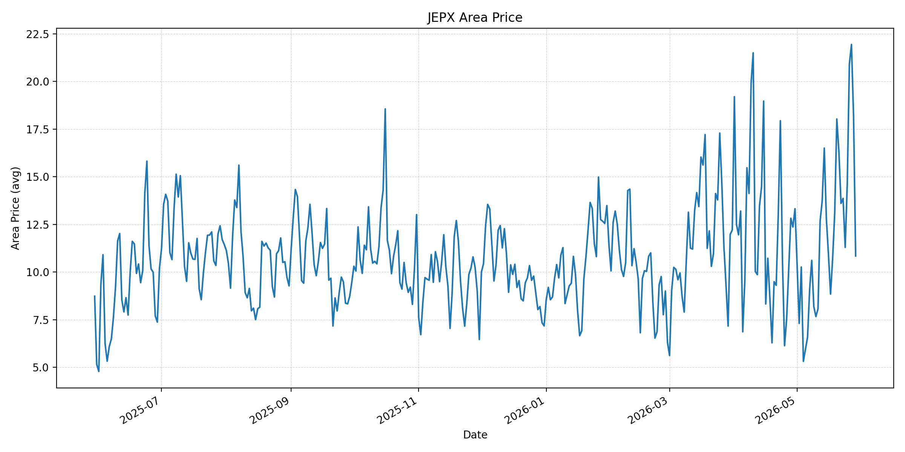
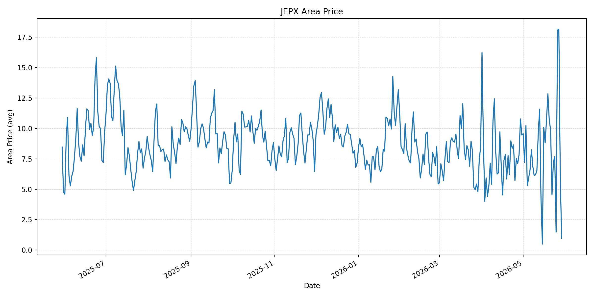
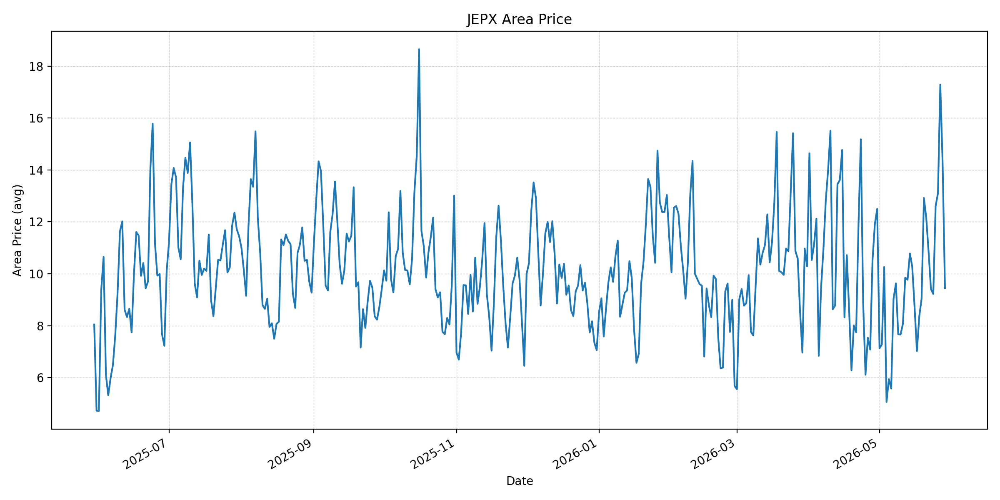
短期トレンド
JKMとJEPXシステムプライスの推移グラフ
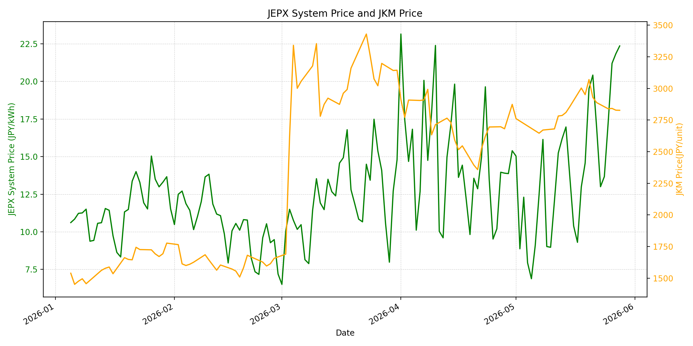
WTIの推移グラフ
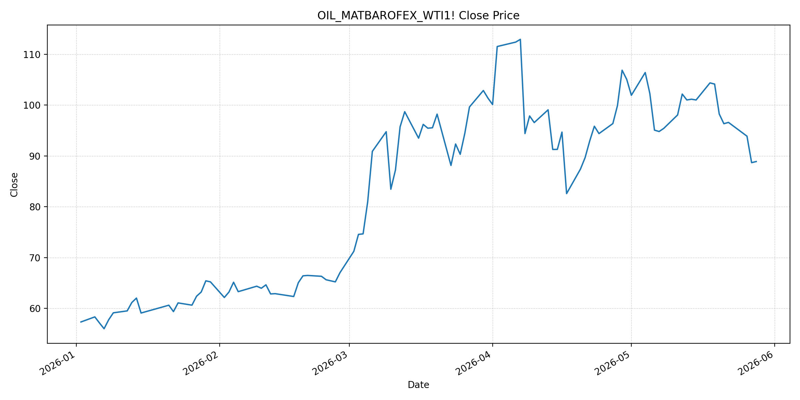
JEPXシステムプライス
JEPXは受渡日ベースの最新非空値で評価しています。最新値は 2026-05-29 分です。先週終値は 2026-05-22 時点の直近値、先月終値は 2026-04-30 時点の直近値で評価しています。
| エリア | 当日価格 | 前日価格 | 前日比（％） | 先週終値 | 先週比（％） | 先月終値 | 先月比（％） | 過去最高値 | 最高値比（％） |
|---|---|---|---|---|---|---|---|---|---|
| システム | 18.32 | 22.36 | -18.07 | 16.90 | 8.40 | 15.39 | 19.04 | 64.06 | -71.40 |
| 北海道 | 10.54 | 21.48 | -50.93 | 15.63 | -32.57 | 12.11 | -12.96 | 73.92 | -85.74 |
| 東北 | 13.37 | 23.29 | -42.59 | 17.78 | -24.80 | 12.11 | 10.40 | 84.92 | -84.26 |
| 東京 | 23.03 | 24.39 | -5.58 | 20.73 | 11.10 | 19.16 | 20.20 | 86.13 | -73.26 |
| 中部 | 19.37 | 21.97 | -11.83 | 19.47 | -0.51 | 16.47 | 17.61 | 52.06 | -62.79 |
| 北陸 | 19.01 | 21.97 | -13.47 | 19.44 | -2.21 | 13.32 | 42.72 | 46.48 | -59.11 |
| 関西 | 19.01 | 21.97 | -13.47 | 19.44 | -2.21 | 13.32 | 42.72 | 46.48 | -59.11 |
| 中国 | 10.84 | 18.21 | -40.47 | 13.60 | -20.29 | 13.32 | -18.62 | 46.48 | -76.68 |
| 四国 | 0.95 | 6.46 | -85.29 | 4.54 | -79.07 | 9.46 | -89.96 | 46.48 | -97.96 |
| 九州 | 9.44 | 14.25 | -33.75 | 10.83 | -12.83 | 12.50 | -24.48 | 40.54 | -76.72 |
LNG先物価格
最新値は 2026-05-28 の LNG(close) です。先週終値は 2026-05-21 時点の直近値、先月終値は 2026-04-30 時点の直近値で評価しています。
| 当日価格 | 前日価格 | 前日比（％） | 先週終値 | 先週比（％） | 先月終値 | 先月比（％） | 過去最高値 | 最高値比（％） |
|---|---|---|---|---|---|---|---|---|
| 2827.00 | 2828.00 | -0.04 | 2929.00 | -3.48 | 2874.00 | -1.64 | 10319.00 | -72.60 |
石油先物価格
最新値は 2026-05-28 の OIL(close) です。先週終値は 2026-05-21 時点の直近値、先月終値は 2026-04-30 時点の直近値で評価しています。
| 当日価格 | 前日価格 | 前日比（％） | 先週終値 | 先週比（％） | 先月終値 | 先月比（％） | 過去最高値 | 最高値比（％） |
|---|---|---|---|---|---|---|---|---|
| 88.90 | 88.68 | 0.25 | 96.35 | -7.73 | 105.07 | -15.39 | 123.70 | -28.13 |
ニュース
イラン情勢に関するニュース
- 2026年5月28日、APは、米国とイランの交渉担当者が60日間の停戦延長と核協議再開で暫定合意したと報じました。ただし、イランは即時確認せず、米側もトランプ大統領の承認が未確定としています。 参照: AP, 2026-05-28
- 2026年5月29日、Reutersは、米イランが停戦延長とホルムズ海峡の通航制限解除で合意に達したものの、トランプ大統領の承認待ちであり、イラン国営メディアも最終確認を否定していると報じました。 参照: Reuters/Investing.com, 2026-05-29
ホルムズ海峡経由の石油・LNGに関するニュース
- 2026年5月28日、APは、暫定合意案がイランによるホルムズ海峡通航料の禁止と30日以内の機雷撤去を含むと報じました。海峡は世界の取引される石油・天然ガスの約5分の1が通る要衝で、合意成立なら価格下押し要因です。 参照: AP, 2026-05-28
- 2026年5月29日、Reutersは、合意案が無制限の海峡通航、米国によるイラン港湾封鎖解除、一部石油制裁緩和を含むと報じました。一方で、直近の無人機・ミサイル関連の応酬は停戦の脆弱さを示しています。 参照: Reuters/Investing.com, 2026-05-29
ホルムズ海峡経由でない石油・LNGに関するニュース
- 過去24時間で、日本向けの非ホルムズ新規大型調達に関する強い追加報道は確認できませんでした。直近では2026年5月27日、S&P GlobalがJERAは豪州Ichthys LNGのストライキリスクを吸収可能と見ていると報じています。 参照: S&P Global, 2026-05-27
- 同記事では、JERAのLNGポートフォリオに占めるホルムズ経由・中東起点の比率は約5％にとどまり、豪州政策リスクや新規米国LNG供給の影響が中期の注視点とされています。 参照: S&P Global, 2026-05-27
日本国内のイラン戦争に関係するニュース
- 過去24時間で、JEPX制度や国内電力市場制度を直接変更する新規の強い発表は確認できませんでした。直近の国内対策として、経済産業省は2026年5月26日に、7月から9月の電気・ガス料金支援と夏季省エネ呼びかけを説明しています。 参照: 経済産業省, 2026-05-26
- 経済産業省は、標準家庭で電気・ガス合わせて3カ月で5000円程度の負担引き下げ効果を見込む一方、現時点では原油やLNGの量は確保できており、従来以上に踏み込んだ節約を求める段階ではないと説明しています。 参照: 経済産業省, 2026-05-26
インサイト
ニュース事項による日本の電力市場への影響（短期：数日〜1週間）
- JEPXシステムプライスは 18.32 円/kWhで前日比 -18.07% に低下しました。ホルムズ通航制限解除案と停戦延長案が出たことで燃料リスクは後退していますが、東京は 23.03 円/kWhと高く、地域差は残っています。
- OILは 88.90 と前日比 0.25%、先週比 -7.73% です。原油は大きく下がった後に低位横ばいですが、Reutersが報じたように合意は未承認で、短期の再上振れリスクは残ります。
- LNGは 2827.00 と前日比 -0.04%、先週比 -3.48% です。JERAの中東・ホルムズ経由LNG比率が限定的であることは安心材料ですが、夏季需要期のエリア需給がJEPXを押し上げるリスクは残ります。
ニュース事項による日本の電力市場への影響（長期：1ヶ月〜半年）
- ホルムズ再開案が承認され、30日以内の機雷撤去と通航制限解除が進めば、OILの先月比 -15.39% という低下は燃料費見通しに効きます。ただし、APとReutersはいずれも最終承認・履行の不確実性を示しており、完全なリスク解除とは見られません。
- システム価格は先月比 19.04% 高い一方、過去最高値比では -71.40% です。燃料面の緊張緩和が続けば長期の上振れ圧力は弱まりますが、夏季需要と地域別需給が高値エリアを残す可能性があります。
- 非ホルムズ調達では、豪州LNGの政策・労務リスクと新規米国LNG供給が中期の焦点です。国内の電気・ガス料金支援は小売負担を下げますが、卸市場価格を直接抑える施策ではないため、調達・ヘッジ判断では燃料価格とJEPXエリア差を分けて管理する必要があります。